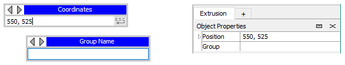

对象属性概述
用于创建挤出集合的对象——点、边、块体和图像——具有属性。这些属性用于按需定义和细化挤出。访问对象属性的两种主要方法是通过控制面板和弹出属性编辑器。在几乎所有情况下，从其中一种方式可访问的属性与从另一种方式可访问的属性相同——也就是说，选择使用哪种只是个人偏好问题。（一个例外是弹出属性编辑器不适用于导入的图像。）

图 1：左侧为弹出属性编辑器，右侧为对象属性控件组
使用弹出属性编辑器编辑属性
选择要编辑其属性的对象。按空格键。该对象类型的弹出属性编辑器将出现在视图中。弹出属性编辑器将根据对象类型提供对象的一个或多个属性，一次显示一个属性。要在编辑器中的属性之间切换，请按 Ctrl + ← 或 Ctrl + →，或单击编辑器左上角出现的箭头。箭头具有方向性，表示在属性集合中向前或向后推进——集合中的属性按固定的重复顺序呈现。
在做出有效选择后，空格键和 Ctrl + 左方向键或 Ctrl + 右方向键都可访问编辑器。区别在于：如果弹出编辑器上次关闭时处于活动状态的属性对当前所选对象可用，则空格键将访问该属性。按 Ctrl + 右方向键将访问第一个属性，连续使用将“向前”循环遍历各属性。按 Ctrl + 左方向键将访问最后一个属性，连续使用将“向后”循环遍历各属性。
右键单击选中的对象会弹出上下文菜单，其第一项为“编辑 [对象] 属性”（其中 [对象] 为当前所选对象类型的名称）。这是访问弹出属性编辑器的另一种方式。
通过控制面板编辑属性
选择所需对象。如果控制面板可见且对象属性控件组可见，则将显示该对象的属性。所显示的编辑字段是动态的——即所显示的属性会随所选对象类型的变化而变化。如果选择的是一个分组，则仅显示可合理应用于该分组所有对象成员的属性。
| 这些内容对您有帮助吗？… | FLAC3D © 2019, Itasca | 原文更新于 2020 年 10 月 8 日 |
| 版权与免责声明 | ||